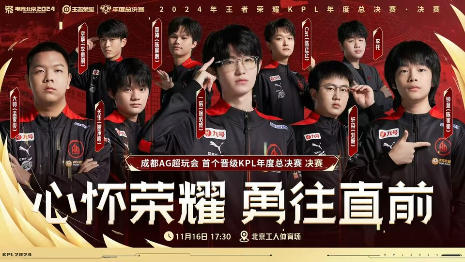
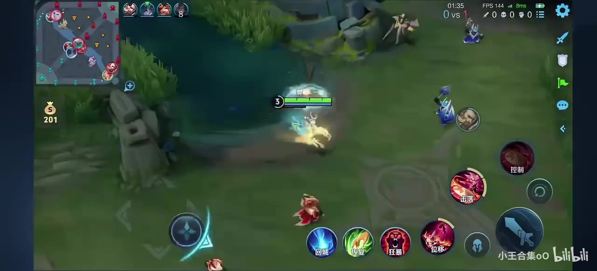
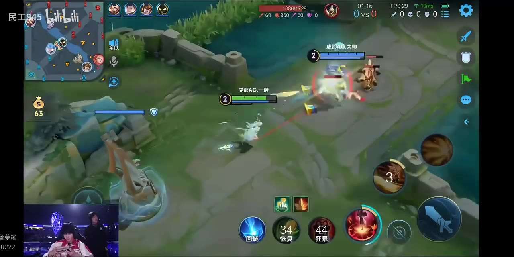
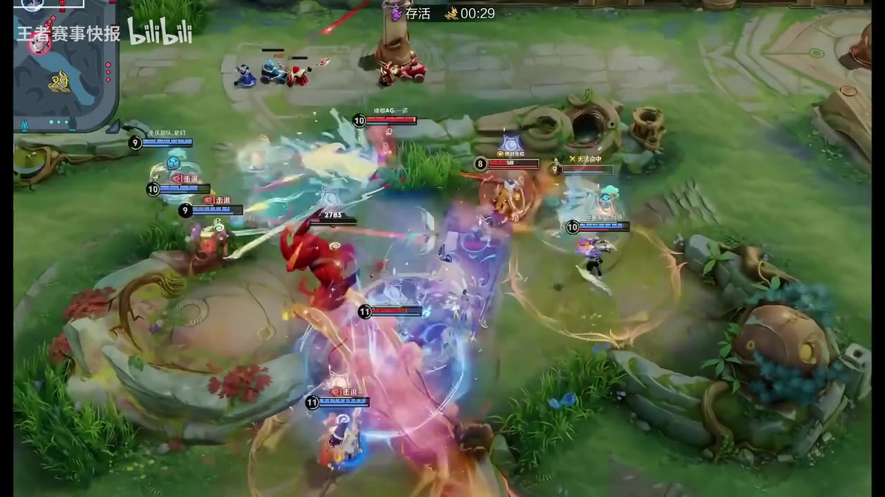
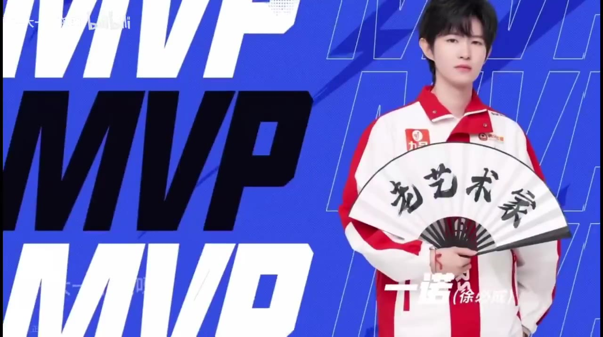
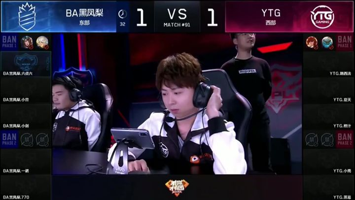

徐必成出生在江西抚州南丰，少年时在警校读书，课余接触《王者荣耀》。一个暑假，职业选手林恒（ID：暖阳）发现了他，邀请他到上海的 TS 俱乐部试训。试训表现被多家俱乐部看中，他最终选择朋友更多的 BA 黑凤梨，加入二队，把 ID 定为「一诺」。
那一年他还没能在 KPL 正赛登场，但职业的门已经推开。
BA 黑凤梨二队 加入
ID 一诺 启用
边路 出道位置
CHENGDU AG · 一诺 专题站
成都AG超玩会 · 一诺 粉丝专题站
记录徐必成的赛场征程、高光对局、成长故事与热爱轨迹。
开始阅读 ↓2024 KPL 年度总决赛 · 成都AG超玩会

选择一个部分，进入阅读
选手基础档案 · 入行经历 · 赛场风格
徐必成，游戏 ID 一诺，2001 年 12 月 26 日出生于江西抚州南丰，成都AG超玩会发育路选手。少年时在警校读书，一个暑假被职业选手暖阳发掘，2017 年加入 BA 黑凤梨二队，从此把 ID 写成了「一诺」。
2018 年 4 月 21 日，他用花木兰完成 KPL 首秀；2019 年随 AG 超玩会拿下队史首座 KPL 冠军。此后是漫长的起落：2020 年两次亚军、2021 年的止步、2022 年的 2000 击杀与重返 S 组，直到 2023 世冠 FMVP、2024–2025 的五座冠军，以及 2025 年总 FMVP。
七冠六亚，两届亚运会冠军。25 岁的他被叫作「老头射手」，却说自己「在打的时候一直都是巅峰」。起落之后仍在赛场，这是属于一诺的答案。
别人都看不懂，我在打的时候一直都是巅峰，最强大的是自己。
* 资料参考：百度百科「徐必成」、直播吧、虎扑《人物》专访。
从警校少年到「老头射手」
2001 年 12 月 26 日，徐必成出生在江西抚州南丰。小时候的他瘦瘦小小，并不擅长体育，父母把他送进江西的一所警校，本意是让他锻炼身体。警校的日子并不轻松：除了文化课，还要练散打、搞体能。后来他回忆那段时间，说自己吃了不少苦，也正是那段经历，让他开始认真思考自己的未来。
课余时间，他接触到《王者荣耀》。一个暑假，职业选手林恒（ID：暖阳）发现了他身上的天赋，邀请他去上海的 TS 俱乐部试训。试训期间，他的表现被多家俱乐部看中，BA 黑凤梨、QGhappy 都递来了橄榄枝。最终，他选择了朋友更多的 BA 黑凤梨，加入二队，把 ID 定为「一诺」，正式踏上职业道路。
2017 年，他进入 BA 黑凤梨二队。2018 年，他以「边路状元」的身份升入一队。4 月 21 日，KPL 春季赛对阵武汉 eStarPro，BA 做出全员轮换，徐必成用花木兰完成 KPL 首秀——那一场没能挽回败局，但属于一诺的故事开始了。
同年 8 月的冠军杯，他作为主力登场，为了适配队伍的「铁桶阵」，主打边路。决赛门票争夺战对上 QGhappy，他与自己的目标 Fly 鏖战七局，惜败。2018 年 KPL 秋季赛，他坐稳首发，BA 打出 16 连胜刷新联赛纪录，总决赛却惜败 Hero 久竞，收获亚军。冬冠未能出线，主力打野退役，战队陷入阵痛，2019 年春季赛无缘季后赛——他第一次尝到职业的残酷。
2019 年 8 月 12 日，AG 超玩会完成对 BA 黑凤梨 KPL 席位的收购，徐必成加入 AG 超玩会。
11 月 29 日，秋季赛败者组半决赛，AG 对上东西部第一的武汉 eStarPro。决胜局，徐必成用公孙离完成那记著名的「关键一推」，带领队伍赢下团战，AG 4:3 淘汰对手，晋级败者组决赛。
12 月 14 日，AG 4:1 战胜 QGhappy，拿下队史首座 KPL 冠军奖杯。那一刻，距离他用花木兰完成首秀才过去一年半。同年，他入选 2019 年度 KPL 最佳阵容（发育路）。
2020 年，他被评为 KPL 春季赛常规赛最佳选手，5 月用裴擒虎达成个人 KPL 1000 击杀。但总决赛，AG 惜败 TS，收获亚军；秋季赛，发育路与打野一肩挑，分均经济 824.6、场均击杀 4，决赛又不敌 DYG，再获亚军。2021 年，队伍在季后赛止步，他在败者组决赛用百里守约拿下 MVP，把比赛拖进决胜局，却还是没能迈过 TTG。
2022 年 2 月，他用鲁班七号达成 2000 击杀；夏天，AG 时隔 225 天重返 S 组；世冠 KIC 预选赛，AG 打出 9 连胜、BO1 百分百胜率进入正赛。可那一年的终点，依然不是冠军。
那是他职业生涯里最长的一段夜路：队友离开、成绩起伏、自我怀疑。他后来在采访里说，输比赛会让他内耗，有无数个夜晚想不打了，但醒来还是坚持走下去。
2023 年 12 月 30 日，王者荣耀世界冠军杯 KIC 总决赛，AG 4:2 击败北京 WB。徐必成拿下 FMVP，公孙离成为他的 FMVP 定制皮肤英雄——那记 2019 年的「关键一推」，在四年后有了一个更完整的注脚。
2024 年，AG 拿下 KPL 夏季赛冠军；11 月 16 日，年度总决赛 4:2 战胜重庆狼队，首夺 KPL 年总冠军。
2025 年，是彻底的丰收：KPL 春季赛、夏季赛、年度总决赛三冠，11 月 8 日的年总决赛 4:2 再胜重庆狼队，他捧起 FMVP，职业生涯冠军数来到「七冠」——七冠六亚。
2023 年，他随中国队夺得杭州第 19 届亚运会电子竞技王者荣耀亚运版本冠军；2024 年 8 月，王者荣耀 x 电竞世界杯决赛，中国队 3:0 战胜马来西亚再夺一冠；2026 年 9 月 28 日，爱知·名古屋亚运会，他再次随中国队登顶。
2025 年 12 月，挑战者杯负于南通 Hero 久竞后，他发文宣布暂别赛场；2026 年 4 月 12 日，他确认回归；5 月 23 日，AG 3:5 不敌重庆狼队，收获挑战者杯亚军；8 月，电竞世俱杯亚军。
25 岁的他，被叫作「老头射手」，却一点也不恼。面对「巅峰已过」的质疑，他只回了一句：
别人都看不懂，我在打的时候一直都是巅峰，最强大的是自己。
从 2017 年那个被暖阳带进职业的警校少年，到 2026 年依然站在赛场上的老将，他说，这是他的青春，也是他的人生。
* 资料参考：百度百科「徐必成」、《人物》专访、直播吧。
按赛季梳理一诺的职业之路
徐必成出生在江西抚州南丰，少年时在警校读书，课余接触《王者荣耀》。一个暑假，职业选手林恒（ID：暖阳）发现了他，邀请他到上海的 TS 俱乐部试训。试训表现被多家俱乐部看中，他最终选择朋友更多的 BA 黑凤梨，加入二队，把 ID 定为「一诺」。
那一年他还没能在 KPL 正赛登场，但职业的门已经推开。
4 月 21 日，KPL 春季赛对阵武汉 eStarPro，BA 全员轮换，徐必成用花木兰完成 KPL 首秀。同年 8 月冠军杯，他作为主力登场，主打边路；决赛门票争夺战对上 QGhappy，与 Fly 鏖战七局惜败。
秋季赛他坐稳首发，BA 打出 16 连胜刷新联赛纪录，总决赛却不敌 Hero 久竞，收获亚军。冬冠出局、主力打野退役，战队进入阵痛期——他第一次尝到职业的残酷。
8 月 12 日，AG 超玩会完成对 BA 黑凤梨 KPL 席位的收购，徐必成加入 AG。11 月 29 日秋季赛败者组半决赛，AG 对上东西部第一的武汉 eStarPro，决胜局他用公孙离完成「关键一推」，AG 4:3 淘汰对手，晋级败者组决赛。
12 月 14 日，AG 4:1 战胜 QGhappy，拿下队史首座 KPL 冠军奖杯；他也入选 2019 年度 KPL 最佳阵容（发育路）。
他被评为 KPL 春季赛常规赛最佳选手；5 月 8 日对阵 DYG，用裴擒虎达成个人 KPL 1000 击杀。春季赛总决赛惜败 TS，秋季赛决赛又不敌 DYG，两度收获亚军；秋季赛他发育路、打野一肩挑，分均经济 824.6、场均击杀 4。
世冠小组赛 AG 先后不敌 TS、QGhappy，随后连胜进八强，四分之一决赛 4:3 淘汰 VG 进入半决赛；冬冠四强止步。
春季赛他率队锁定胜者组，却在胜者组半决赛落败；败者组决赛第六局，他用百里守约拿下 MVP，把比赛拖入决胜局，最终还是没能迈过 TTG。
那一年没有冠军，但他在逆境里的那手百里守约，成了很多人记住的画面。
2 月 20 日，他用鲁班七号达成 KPL 2000 击杀。6 月 23 日对阵深圳 DYG，虞姬拿下 MVP，帮助 AG 3:1 取分，时隔 225 天重返 S 组。
季后赛败者组 4:0 淘汰南京 Hero 久竞；世冠 KIC 预选赛，AG 打出 9 连胜、BO1 百分百胜率进入正赛，四分之一决赛 1:4 不敌北京 WB。
12 月 30 日，王者荣耀世界冠军杯 KIC 总决赛，AG 4:2 击败北京 WB。徐必成拿下 FMVP，公孙离成为他的 FMVP 定制皮肤英雄——那记 2019 年的「关键一推」，在四年后有了更完整的注脚。
同年，他随中国队夺得杭州第 19 届亚运会电子竞技王者荣耀亚运版本冠军，并获 2023 年 KPL 最受欢迎选手。
5 月春季赛季后赛，他用敖隐打出 9 战全胜；9 月 15 日 KPL 夏季赛决赛 4:1 夺冠；11 月 16 日年度总决赛 4:2 战胜重庆狼队，首夺 KPL 年总冠军。
这一年，他包揽 2024 年度 KPL 最受欢迎选手、最佳阵容-最佳发育路、最佳选手；8 月还拿下电竞世界杯王者荣耀季中邀请赛 MVP。
3 月 2 日，他用公孙离达成 KPL 第 4000 助攻；3 月 28 日，用鲁班七号拿下第 600 个胜局，成为第二位达成该里程碑的选手。
这一年，AG 拿下 KPL 春季赛、夏季赛、年度总决赛三冠；11 月 8 日年总 4:2 再胜重庆狼队，他捧起 FMVP，职业生涯冠军数来到「七冠」——七冠六亚。
1 月，他第三度获得年度最受欢迎选手；4 月 12 日挑战者杯确认回归；5 月 23 日挑战者杯决赛，AG 3:5 不敌重庆狼队获亚军，职业生涯战绩改写为七冠六亚。
8 月 8 日，随 AG.AL 获电竞世俱杯王者荣耀项目亚军；9 月 28 日，随中国队夺得爱知·名古屋亚运会冠军。
* 资料参考：百度百科「徐必成」、直播吧《一诺职业生涯成绩改写为七冠六亚》。
经典名场面 · 关键团战 · 出圈金句
4:2 送 KSG 回家，多次丝血逃生，发育路第一视角完整操作。

巅峰对决AG 超玩会 vs RNG.M 巅峰对决，一诺公孙离第一视角纯享。

FMVP 皮肤AG 对战狼队第五局，一诺用自己 FMVP 皮肤的公孙离第一视角。

名场面用一诺 15 个高光名场面告诉你，何为「史一射」。

MVP 集锦2018 冬冠 – 2025 春，一诺各赛季动态 MVP 时刻。

20182018 年 BA 黑凤梨 vs YTG，一诺关羽四杀的高光片段。
* 视频来自 B 站公开二创（仅作非商业粉丝展示），已统一转 720P 高清。
职业生涯 · 里程碑 · 招牌英雄
一诺最具代表性的英雄。高机动、高操作上限，是他在关键局里最信任的答案。
一诺早期的招牌。翻滚突袭的爆发与团战收割，是 2019 年那支 AG 的重要火力点。
无位移的站桩射手，考验走位与团队保护，也是他里程碑的见证者。
真实伤害与灵活位移兼备，是一诺在季后赛里的常用答案。
二技能解控、持续输出，是一诺英雄池里稳定可靠的一环。
二技能免疫物理伤害，让他在对线期更难被针对。
2024 年一诺的「隐藏答案」，出场即高效。
人虎双形态，前期入侵与节奏带动极强，是一诺在 2020 年兼任打野时的常用答案。
超远距离狙击与视野压制，是一诺在逆境里常用的「破局手」。
| 赛季 | 赛事 | 场次 | 胜场 | KDA | 场均击杀 | 场均死亡 | 场均助攻 | 分均经济 | 参团率 |
|---|---|---|---|---|---|---|---|---|---|
| 2024 | KPL 春季赛 | 69 | 52 | 5.0 | 2.6 | 1.6 | 4.1 | 756.1 | 68.9% |
| 2023 | 世冠 KIC | 49 | 35 | 5.1 | 2.3 | 1.3 | 4.3 | 763.0 | 68.0% |
| 2023 | 世界挑战杯 | 25 | 17 | 5.0 | 2.4 | 1.3 | 3.8 | 747.1 | 72.2% |
| 2023 | KPL 春季赛 | 76 | 37 | 4.1 | 2.4 | 1.6 | 3.5 | 794.0 | 72.3% |
| 2022 | KPL 夏季赛 | 72 | 37 | 4.1 | 3.2 | 2.3 | 3.7 | 794.4 | 67.1% |
| 2022 | KPL 春季赛 | 64 | 32 | 4.1 | 2.8 | 2.1 | 3.6 | 769.7 | 74.4% |
| 2021 | KPL 秋季赛 | 75 | 32 | 3.9 | 2.8 | 2.4 | 3.7 | 719.9 | 64.9% |
| 2021 | 世冠 | 26 | 16 | 6.0 | 3.7 | 2.3 | 5.4 | 750.6 | 73.5% |
| 2021 | KPL 春季赛 | 83 | 52 | 4.6 | 3.1 | 2.2 | 4.3 | 780.1 | 66.6% |
| 2020 | 冬季冠军杯 | 11 | 6 | 4.3 | 3.0 | 2.8 | 4.3 | 796.5 | 63.2% |
| 2020 | KPL 秋季赛 | 73 | 49 | 5.0 | 4.0 | 2.5 | 4.6 | 824.6 | 71.8% |
| 2020 | 世冠 | 25 | 14 | 5.2 | 3.9 | 2.0 | 4.0 | 802.9 | 69.8% |
| 2020 | KPL 春季赛 | 73 | 49 | 5.5 | 4.7 | 2.4 | 5.1 | 799.3 | 72.6% |
| 2019 | 冬季冠军杯 | 11 | 6 | 5.5 | 3.8 | 2.2 | 4.2 | 775.6 | 70.9% |
| 2019 | KPL 秋季赛 | 81 | 53 | 6.4 | 4.4 | 1.8 | 4.6 | 762.4 | 77.1% |
| 2019 | KPL 春季赛 | 53 | 19 | 3.7 | 2.7 | 2.0 | 3.4 | 720.7 | 61.3% |
| 2018 | KPL 秋季赛 | — | — | 4.2 | 2.9 | 1.7 | 4.2 | 685.0 | 59.5% |
| 2018 | 冠军杯 | — | — | 4.1 | 2.0 | 1.5 | 4.3 | 672.0 | 59.4% |
| 2018 | KPL 春季赛 | — | — | 2.1 | 2.3 | 2.7 | 3.3 | 621.0 | 58.6% |
| 赛季 | 赛事 | 结果 | 亮点 |
|---|---|---|---|
| 2024 | KPL 夏季赛 | 冠军 | 4:1 夺冠；春、夏两季分均经济第一 |
| 2024 | 年度总决赛 | 冠军 | 4:2 重庆狼队，首夺年总 |
| 2025 | KPL 春季赛 | 冠军 | 4:1 佛山 DRG；常规赛最佳选手 |
| 2025 | KPL 夏季赛 | 冠军 | 赛季冠军 |
| 2025 | 年度总决赛 | 冠军 | 4:2 重庆狼队，FMVP |
| 2025 | 电竞世界杯 | 冠军 | 最受欢迎选手 |
| 2026 | 挑战者杯 | 亚军 | 3:5 重庆狼队 |
| 2026 | 电竞世俱杯 | 亚军 | 随 AG.AL 获亚军 |
| 2026 | 亚运会 | 冠军 | 爱知·名古屋 |
* 数据参考：百度百科生涯数据表（截至 2024-05-17）与公开赛事记录。
温暖又有力量的句子
「别人都看不懂，我在打的时候一直都是巅峰，最强大的是自己。」
「你运气很好，想怎么玩就怎么玩。」
「老头射手」
「输比赛会内耗，有无数个夜晚想不打了，但醒来还是坚持走下去。」
* 语录参考：《人物》专访（2026-10）、虎扑流言板。
测测你有多了解一诺
1. 一诺的本名是？
1. 2020.05.08，他用这个英雄达成 KPL 1000 击杀。
写下一句应援，留给少年